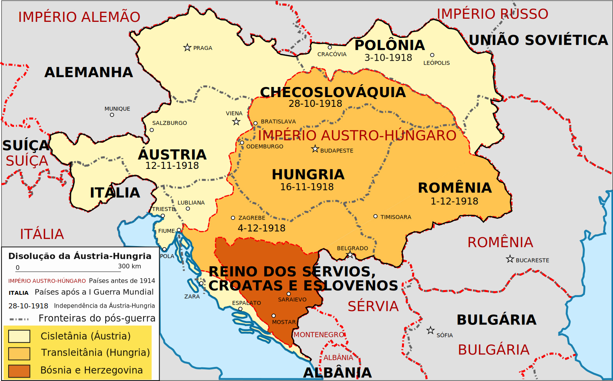
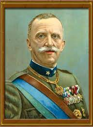

Quando terminou a Primeira Guerra Mundial (1914-1918).
A Itália tinha enormes dívidas, uma inflação crescente e a produção industrial e agrícola arruinada. O desemprego e os baixos salários geravam protestos. As esperadas compensações territoriais e econômicas que o país esperava receber por seu apoio aos aliados não se concretizaram, o que causou grande frustação nacional.

Império Austro-Húngaro
Itália esperava conquistar territórios do Império Austro-Húngaro. Os nacionalistas italianos acusavam o governo democrático de fraco e incapaz de defender os direitos do país, pois aceitara uma "vitória multilada".
Nesse clima de tensão social e de crise econômica, Benito Mussolini criou, em 1919, grupos paramilitares que dois anos depois originaram o Partido Fascista Italiano.
"Fascista" deriva de fascio, um feixe de varas amarradas a um machado, símbolo do poder e da autoridade do antigo Império Romano, que foi adotado como emblema por Mussolini.
Nacionalista extremado, Mussolini soube explorar as insatisfações sociais e os anseios populares, criando uma ideologia de exaltação à prátia e ao Estado.
O programa fascista defendia a supremacia do Estado sobre a sociedade e a limitação dos poderes do legislativo.
Combatia a democracia, o liberalismo e o comunismo. Propunha restabelecer a ordem social e empreender o crescimento econômico e a expansão territorial da Itália.
Em 1921, foram eleitos 35 deputados fascistas, entre eles Mussolini. Mas os socialistas elegeram 156 deputados, o que lhes garantia o governo do país. Com o apoio da burguesia, Mussolini decidiu uma exibição de força: organizou a Marcha sobre Roma (outubro de 1922). Grupos armados de fascistas saíram de diversos pontos do norte da Itália em direção a Roma, ocupando no caminho estações de trem, postos do correio e prefeituras.
Mussolini despertava o orgulho nacional ao lembrar as glórias do Império Romano, afirmando ser destino da Itália dominar os povos.

Pressionado, o rei Vitor Emanuel III nomeou Mussolini primeiro-ministro(1922), que desde de então foi estendendo seu poder por meio de fraudes eleitorais, leis impostas e violência contra seus opositores.
A marcha só foi possível porque contou com o apoio de membros do governo e do Exército, interessados em afastar os socialistas.
Em 1925, a ditadura fascista estava consolidada, com os partidos políticos dissolvidos (exceto o Fascista) e os jornais cesurados. Mussolini, chamado de duce (do latim dux, chefe), concentrou plenos poderes, governando por meio de decretos e só respondendo ao rei
"Mussolini não erra nunca", frase escrita nos jornais, nos edifícios e repetida no rádio, refletia o poder absoluto do duce.
As greves foram proibidas e os sindicatos substituídos por corporações, que reuniam trabalhadores e patrões, sob a direção de um delegado nomeado por Mussolini.
Foi criada também uma legislação trabalhalista, com jornada de 8 horas, seguro contra acidentes de trabalho, regulamentação do trabalho noturno etc., o que trouxe grande popularidade a Mussolini.

A produção industrial e agrícola cresceu e o nível de emprego estabilizou-se, As medidas contra o analfabetismo e o crime organizado tiveram êxito. Graças à criação do Estado do Vaticano (independente e chefiado pelo papa) e à oficialização do catolicismo como religião do Estado fascista e base do ensino na Itália, Mussolini conseguiu o apoio da Igreja católica para o regime.